review/add-flow.ts 的 openAddToReviewFlow。下面每一条都是真机点的，不是看代码推的。
add-flow.ts（唯一入口与分流）、add-flow-model.ts（纯逻辑：整篇钥匙 / 正文构造 / 截断 / 文件夹候选 / 静默判定 / 结果话术）、card-text.ts（喂给模型的正文口径）；index.ts 四个命令入口、main.ts 文件树右键与门面、ui.ts 空态、watch.ts 监听全部改走同一条流程。reviewAskMode / reviewLastMode（含 8 个语言包 key）与 reviewadd 死分支、openReviewAdd 死入口。D:\Obsidian\bz 主插件那套「加入复习计划」是另一个插件、另一份数据，按要求完全没碰。以前命令直接 addItem 写库，没有面板、没有 AI、没有方式选择。现在先弹四选一，再确认题面，确认后才写计划。
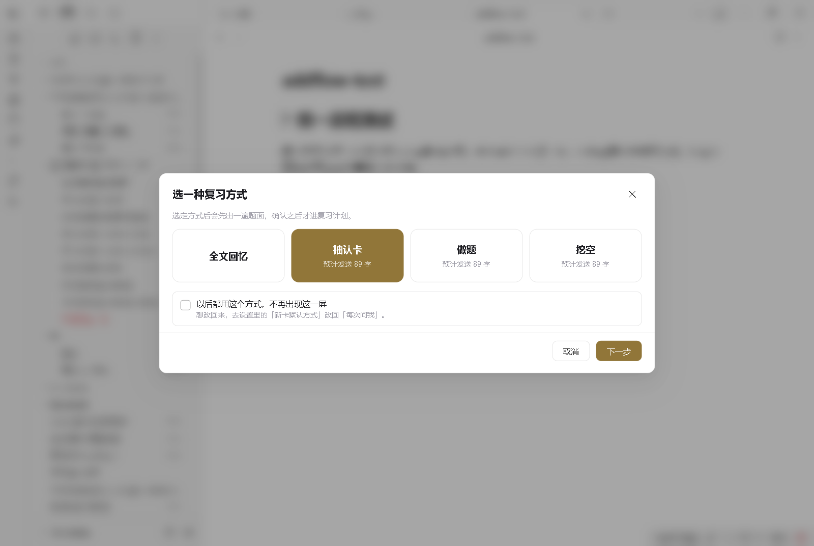
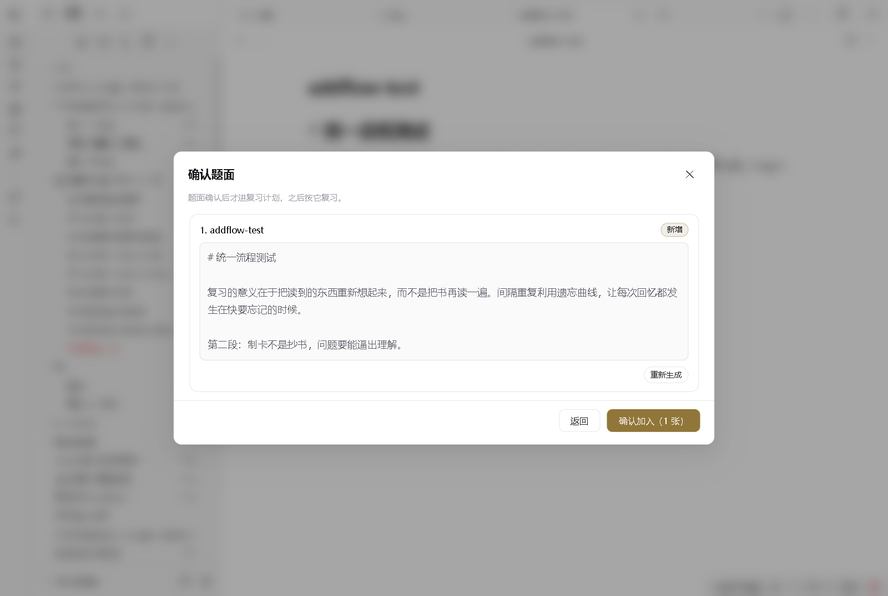
第一次改完真机就踩到了：笔记统一成整篇卡后，排期表里存的是 note:<path>，而入口查重只问真实路径，第二次点命令还会再弹一次选方式。现在两种钥匙都问。
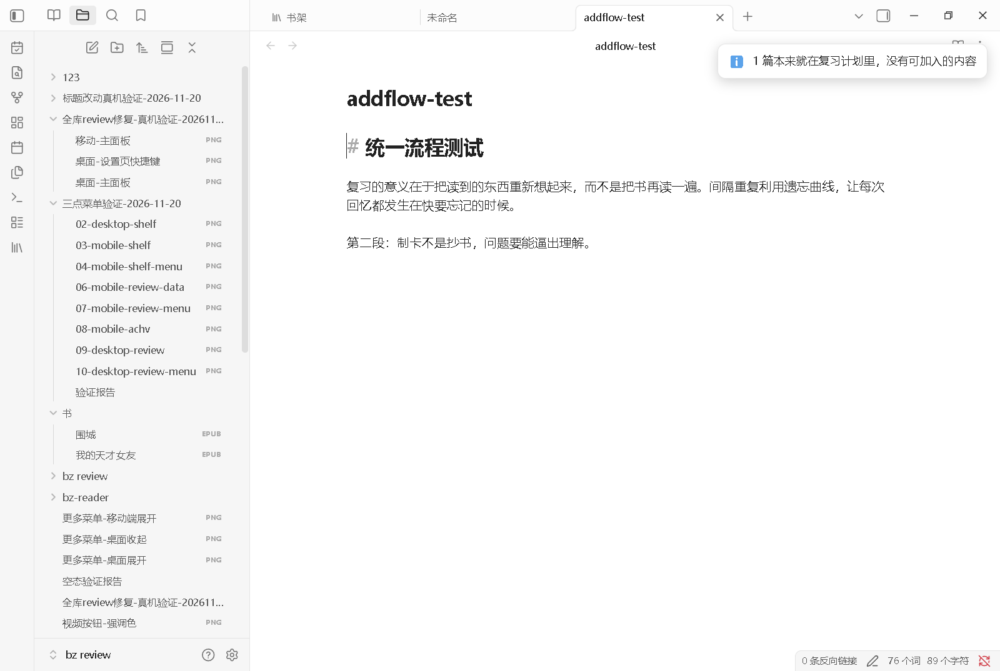
CDP 直接查排期表： note:addflow-folder/甲.md planned=true note:addflow-folder/乙.md planned=true note:addflow-test.md planned=true
右键 围城 · 读书笔记.md → 菜单「加入复习」→ 同一条四选一。菜单项由 CDP 断言确认（14 项），合成右键不会驻留菜单，所以截图是点完之后的制卡窗。
以前文件夹是一次性递归写库，用户连哪几篇进去了都不知道。现在先勾选，再进同一条流程。
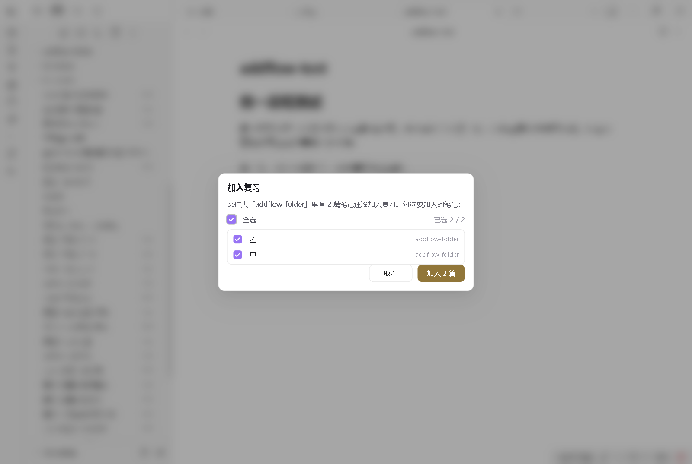
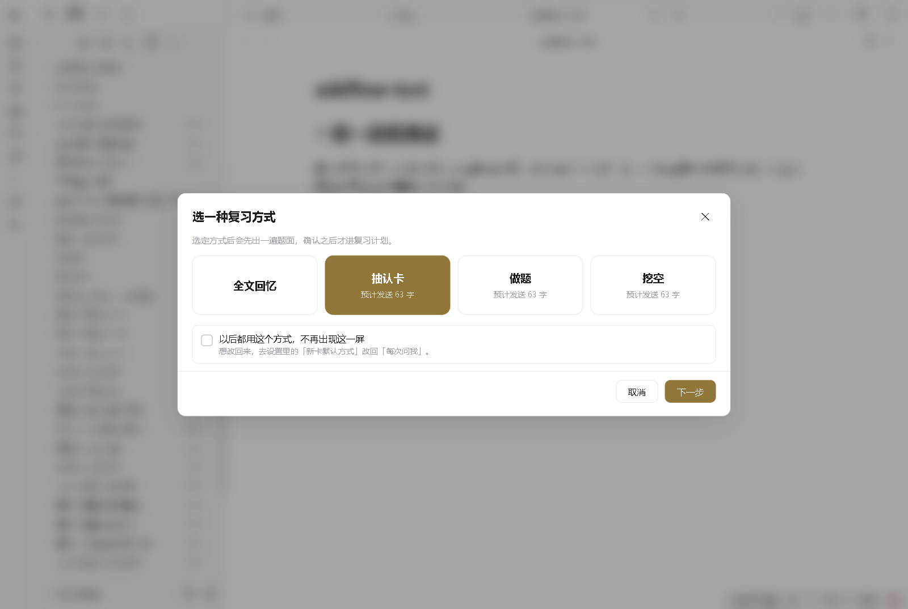
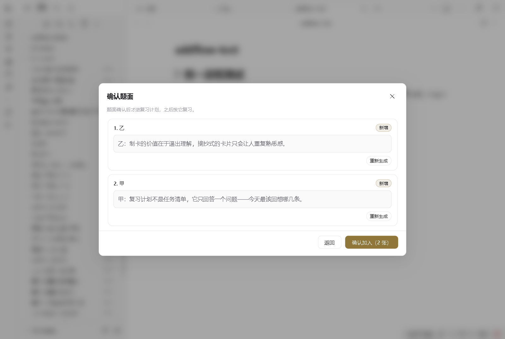
空态以前只有三颗按钮，笔记类入口是断的。现在补上第四颗「把当前笔记加入复习」，点它同样走四选一。
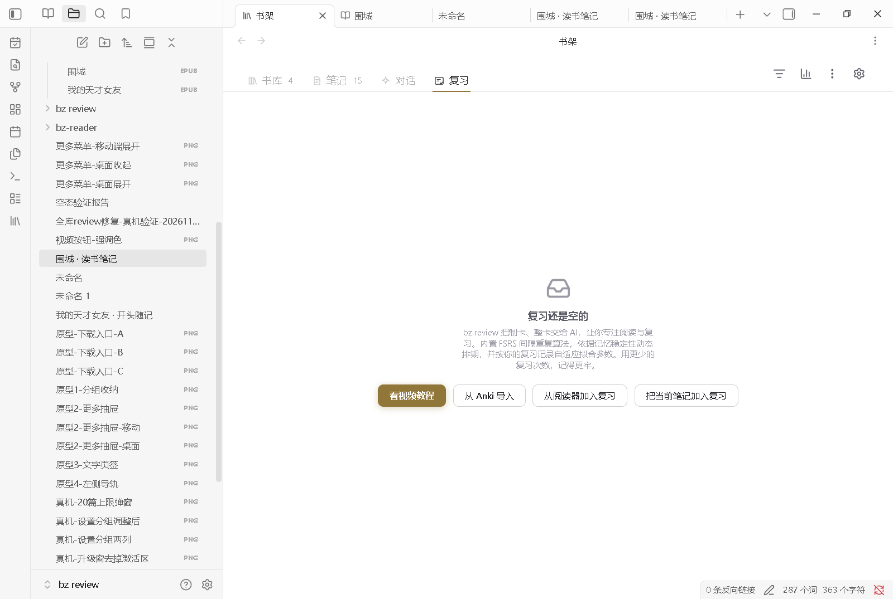
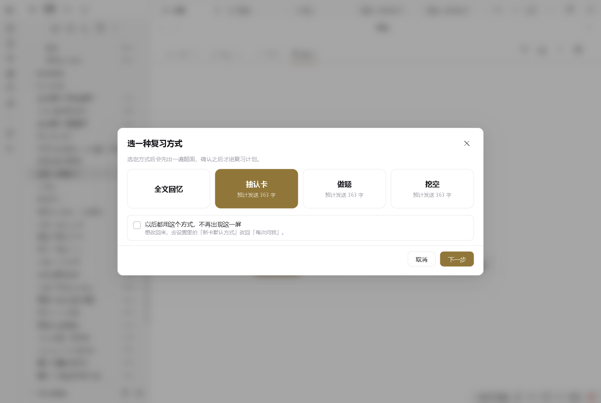
bz review/review.json，截完已恢复并核对了条数。以前监听器直接写库，只发一条通知。现在新建笔记会弹同一条流程；如果设置里选了「不用每次询问」，就直接入库不再弹。
addflow-watch/监听甲.md 后自动弹出四选一（27 字）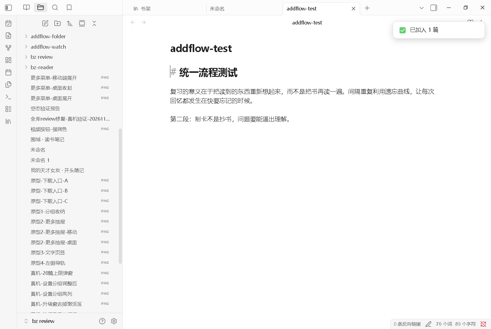
note:addflow-watch/监听乙.md 已 plannedreviewCardDefaultMethod），没有另加开关。书卡右键「加入复习」→ Review 的「选要加入的内容」→ 按划线 / 按章节 → 下一步。
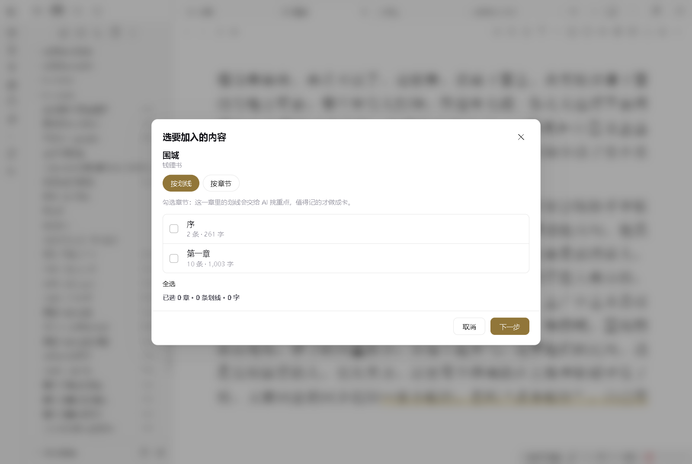
390×844@3x 下同一条流程的选方式屏，2×2 网格不挤、按钮不折行。
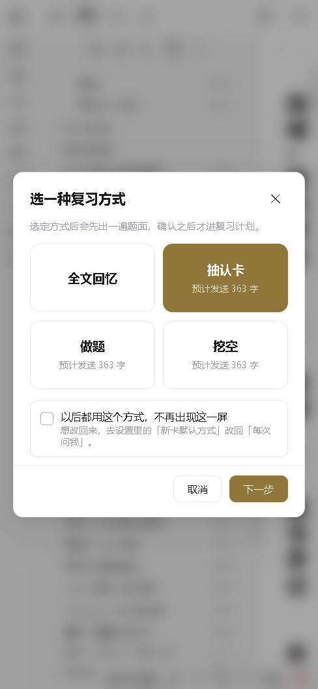
这些是用户没点到、调研时找出来的：
| 位置 | 问题 | 处理 |
|---|---|---|
review「新笔记加入提醒」reviewAutoAddNotice | 自动加入改走流程后不再有读取方 | 删除设置项与字段 |
review app.addCurrentToReview | 第二套「直接写库」的方法，留着就是后门 | 删除 |
| reader「加入复习先选方式 / 上次用的方式」 | 流程搬走后无人读取，开关还挂在设置页 | 删除（含 8 语言包与测试） |
reader actions.ts 的 reviewadd 分支 | 侧栏入口撤掉后没有派发点 | 删除 |
reader openReviewAdd | 同上，死入口 | 删除 |
| 五个入口的提示口径 | 说法不一，有的静默有的报异常 | 统一走 addSummaryText |
| 整篇笔记的正文 | frontmatter 进卡、整篇几千字全塞提示词 | frontmatter 不进卡；模型只看前 1500 字 |
| AI 出题失败兜底 | 整篇笔记会把全文当问句面 | 兜底问句截断到 60 字 |
note:<path>）。想升级老条目要先移出再重加，本轮没做自动迁移。Review: 把当前笔记加入复习| 仓 | 提交 | 内容 |
|---|---|---|
| bz-review | 4cf68d4 | 所有入口统一成一条流程（21 文件） |
| bz-review | a46c63e | 合并回 master |
| bz-review | fef7517 | 重复查重认两种钥匙（真机发现后补） |
| bz-reader | 7445c1e | 删死开关与死入口 |
| bz-reader | 575765a | 合并回 master |